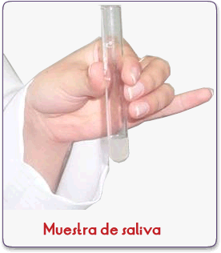
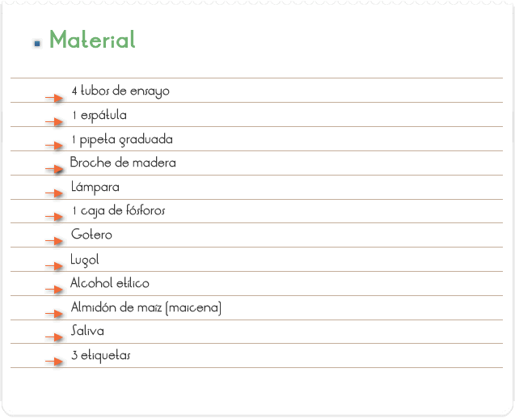
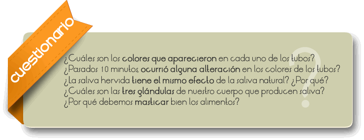

La saliva es un líquido de la cavidad bucal, producido por las glándulas salivales, transparente, de viscosidad variable, compuesto principalmente por agua, sales minerales y algunas proteínas.
La composición es similar a la del plasma. Está compuesta por:
• Agua: Representa un 95% de su volumen, en la que se disuelven el 5% restante formado por sales minerales como iones de sodio, potasio, cloruro, bicarbonato y fosfatos. El agua permite que los alimentos se disuelvan y se perciba su sabor en el sentido del gusto.
• Iones cloruro: Activan la amilasa salival o ptialina.
• Bicarbonato y fosfato: Neutralizan el pH de los alimentos ácidos y de la corrosión bacteriana.
• Moco: Lubrica el bolo alimenticio para facilitar la deglución y que pueda avanzar a lo largo del tubo digestivo, sin dañarlo.
• Lisozima: Es una sustancia antimicrobiana que destruye las bacterias contenidas en los alimentos, protegiendo en parte los dientes de las caries y de las infecciones.
• Enzimas: Como la ptialina, que es una amilasa que hidroliza el almidón parcialmente en la boca, comenzando la digestión de los hidratos de carbono.
• Estaterina: Con un extremo aminoterminal muy ácido, que inhibe la precipitación de fosfato cálcico al unirse a los cristales de hidroxiapatita. Además, también tiene función antibacteriana y antifúngica.
• Otras sustancias: Como inmunoglobulinas específicas, transferrina, lactoferrina.

Observar la digestión del almidón por la enzima Ptialina que es encontrada en la saliva.

1. Recoger en el primer tubo de ensayo un poco de saliva (aproximadamente 4 cucharas).
2. Colocar parte de la saliva en un tubo de ensayo y hervir sobre la lamparita por 3 min.
3. Preparar en el segundo tubo de ensayo, una disolución de 100ml de agua y la medida de 3 espátulas de almidón, homogeneizando muy bien la disolución.
4. Numerar tres de los cuatro tubos de ensayo (1, 2 y 3).
5. Colocar 5ml de la disolución de almidón, previamente preparada en cada tubo de ensayo.
6. Añadir en el tubo No 1 la medida de una cuchara de agua.
7. Añadir en el tubo No 2 la medida de una cuchara de saliva no calentada.
8. Añadir en el tubo No 3 la medida de una cuchara de saliva previamente calentada.
9. Adicionar 2 gotas de Lugol en cada tubo de ensayo, esperar 10 minutos y anotar los resultados.

La saliva es uno de los jugos digestivos producidos al nivel de las glándulas salivares. Nuestro cuerpo presenta tres conjuntos de glándulas salivares.
Glándulas Parótidas: situadas próximas a los oídos, esas glándulas, cuando atacadas por virus, se quedan hinchadas. A este proceso se le da el nombre de parotiditis, más conocida como paperas.
Glándulas Sub mandibulares: localizadas bajo la mandíbula.
Glándula Sublinguales: que quedan debajo de la lengua.
Todas presentan canales que terminan en el interior de la cavidad bucal. En la saliva podemos encontrar una enzima conocida como Ptialina y que actúa sobre el almidón, digiriéndolo, estando aún en el interior de la boca. Tal enzima es también conocida como Amilasa Salivar. Como toda enzima, la ptialina presenta características propias, y entre ellas podemos citar:
a) actúa en vetas específicas de PH;
b) su velocidad de reacción es proporcional a la concentración del sustrato;
c) presenta sustratos específicos;
d) su acción es reversible;
e) su actividad puede ser alterada en distintas temperaturas.
La última característica podrá ser verificada en este experimento. En general las enzimas no soportan elevadas temperaturas y, en estas condiciones pierden sus estructuras terciarias, volviéndose inactivas.
Durante la masticación, los alimentos además de ser triturados son, también, insalivados. Durante la insalivación la Ptialina ya empieza la digestión del almidón. Cuando no masticamos bien los alimentos, el almidón que podría haber sido digerido en la boca, deberá ser digerido en otras partes del tubo digestivo, dificultando todo el proceso de la digestión.
Pasados 10 minutos después del experimento, los alumnos podrán observar que las coloraciones de los tubos de ensayo 1 y 3 no se alteraron, mismo después de agregado el Lugol.
El Lugol es un reactivo capaz de indicar la presencia del almidón, a través de la alteración de la coloración violeta. Esto porque en el tubo 1 no había enzima que digiriera el almidón, Lugol, el se mantuvo hasta el final del experimento.
En el tubo 3, a pesar de haber agregado saliva, que había sido hervida, este procedimiento transformó a la Ptialina en inactiva (la mayoría de las proteínas, se desnaturalizan a temperaturas elevadas), por eso el almidón se mantuvo íntegro hasta el final del experimento.
En el tubo 2, que recibió saliva natural, esperamos que ocurra una alteración en la coloración del tubo de ensayo. Eso porque la Ptialina contenida en la saliva quebró gran parte de las moléculas de almidón existentes en el tubo de ensayo, transformándolas en maltosa y glucosa. El Lugol no colora la maltosa y glucosa.